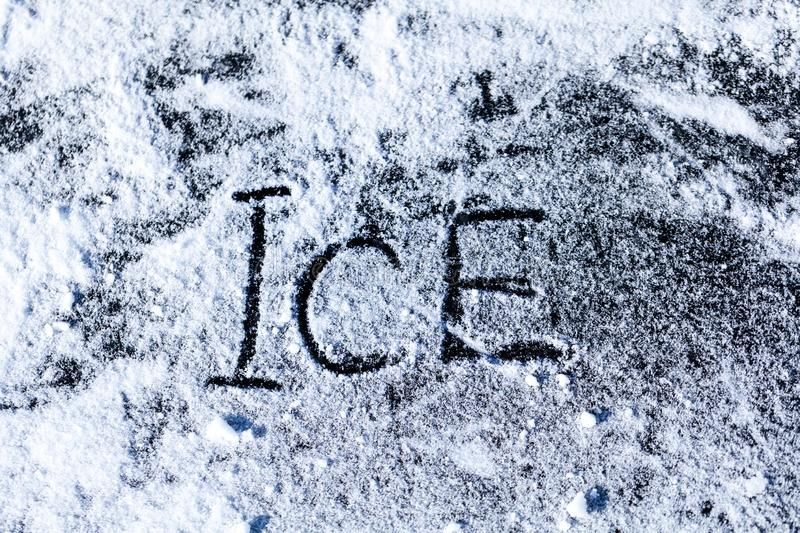

As Isai was a minor, he did not walk the desert because it was too dangerous. From the beginning of the journey, he and others in his group planned to turn themselves in to CBP. In the night, they cross the Rio Grande by inflatable rafts. They walked for more than thirty minutes until they found CBP agents.
Isai was placed against the ICE vehicle while the agent checked him for a weapon or drugs. Because Isai was from the countryside, he did not know the process. His jeans started falling, he reached down to pull them up, but the agent yelled at him.
He was taken to an ICE facility, that immigrants call "La hielera" (the icebox) because it is extremely cold. There were no windows and the doors were made of metal, so detainees did not know whether it was day or night. Isai doesn't remember how long he was there, but it felt like an eternity because his body was shaking because of the cold and he could see his own breath in the air.